Written for someone who has never opened these tools. Part 1 gets you going in ten minutes. Part 2 answers "How do I…?" one job at a time. Part 3 is the full detail, for when you need it.
Part 1. Quick start
| Tool | What it does for you |
|---|---|
| Dashboard | Your home page. Tells you what to do next, today's jobs, the week ahead, and the money. |
| Job Log | Every job you've ever logged. Add, change and move jobs along. |
| Report sending | You save a finished report as a PDF into one Drive folder. It emails itself to the right people. |
| Photo Tool | Turns a day's photos into named, watermarked zips, one per job. Use it on the PC. |
| Dictation | Talk your notes into the phone, room by room. Use it on the phone. |
Each device keeps its own copy so it works fast, even without a signal. The master copy is the Google Sheet "WPS Job Log" on info@. On the PC, changes save to Google by themselves within seconds once you're signed in. The sidebar says Saved to Google ✓ 08:45 when all is well. On the phone, tap Save & get latest each time you open it and after you change something.
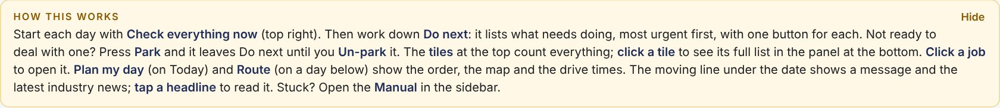
That's really all there is to it. Part 2 shows each step in detail.
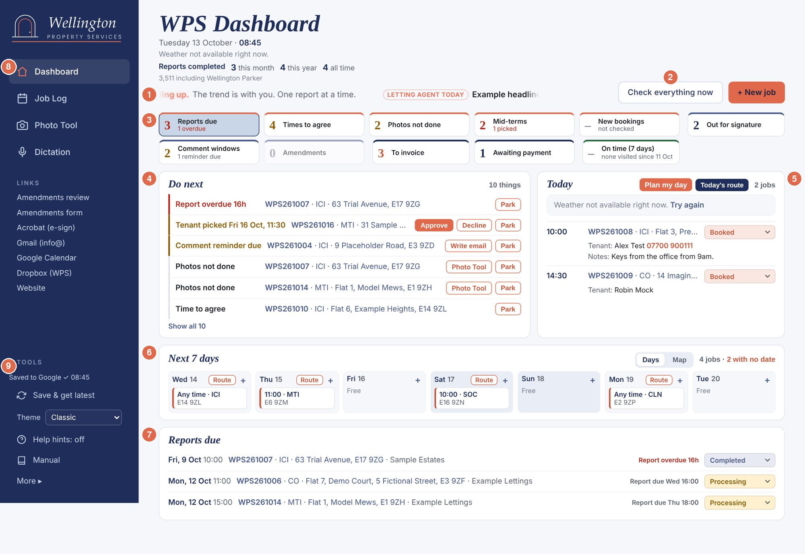
| ICI | Inventory and check-in. The tenant signs it and has 7 days to comment. |
| CO | Check-out. Report due 48 hours after the visit. |
| MTI | Mid-term inspection. Always copied to bowpropman@winkworth.co.uk. |
| SOC | Schedule of condition. |
| CLN | Clean check. |
| Booked | In the diary, not visited yet. |
| Processing | Visited, report being written. The report clock is running. |
| Completed | Report written, not sent. |
| Sent | Report has gone out. Set by itself when the report emails itself. |
| Signed | Check-in signed by everyone. You set this when the signed copy arrives. |
| Deemed agreed | Check-in: 7 days passed, no signature, no comments open. Set by itself. |
| Archived | All done and filed. |
| Do next | The Dashboard's to-do list, most urgent first. |
| Park | Take a job off Do next for now. Un-park puts it back. It still shows everywhere else. |
| Tile | The small counters across the top of the Dashboard. Click one to see its list. |
| To review tray | Bookings, changes, cancellations and Tide invoices Claude found in the inbox, waiting for your click. |
| Times to agree | Booked jobs with no time (or no date) yet. |
| Comment window | The 7 days a tenant has to comment on a check-in. |
| Amendments | Tenant comments sent through the comments form. |
| Slot link | A mid-term tenant's own web link where they pick a free time. |
| WPS Ready to send | The Google Drive folder you save finished reports into (G:\My Drive\WPS Ready to send on the HP). |
| Held | A report the sender wouldn't send because something was missing. info@ gets an email saying why. |
| Undo bar | The bar at the bottom for 8 seconds after a change, with an Undo button. |
| Save & get latest | Saves to Google and brings in changes from your other devices. |
Part 2. Sixteen everyday jobs, step by step
Each job is a few numbered steps. The coral numbers on the pictures match the steps. For more detail, the section in Part 3 is named at the end.
More: section 5.
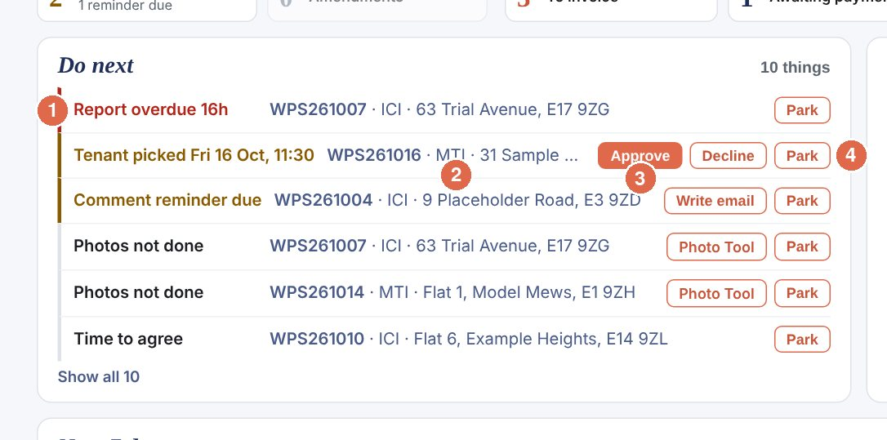
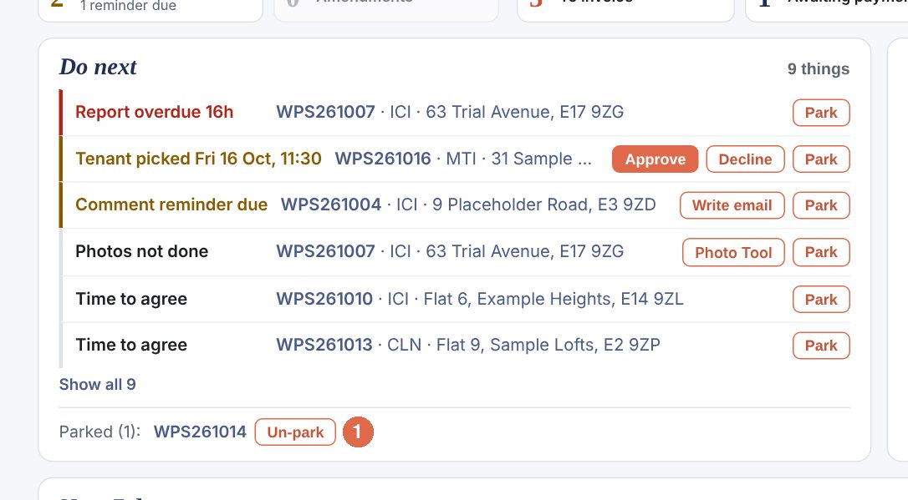
Do next shows 6 lines; Show all shows the rest. "Nothing urgent. All caught up." means exactly that.
More: section 5.
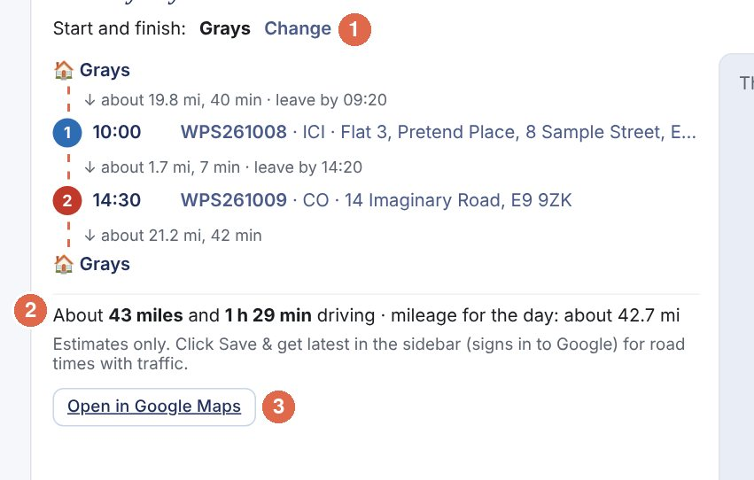
More: section 17.
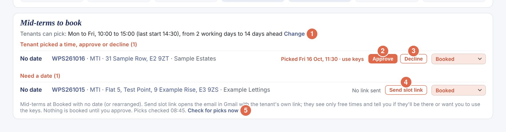
More: section 16.
WhatsApp bookings can't be seen: add those by hand (4.6).
More: section 10.
More: section 9.
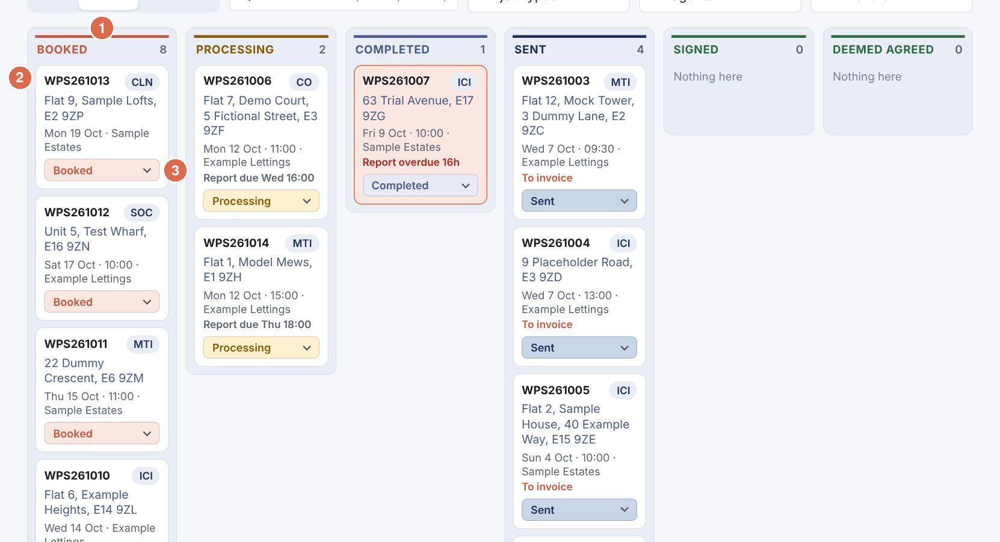
More: sections 7 and 8.
More: section 6.
More: section 14.
More: section 15.
More: sections 11 and 12.
More: section 13.
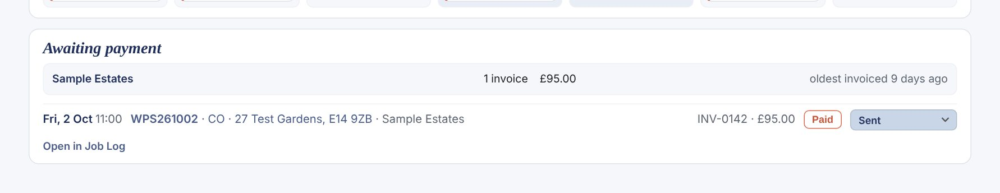
More: section 5.
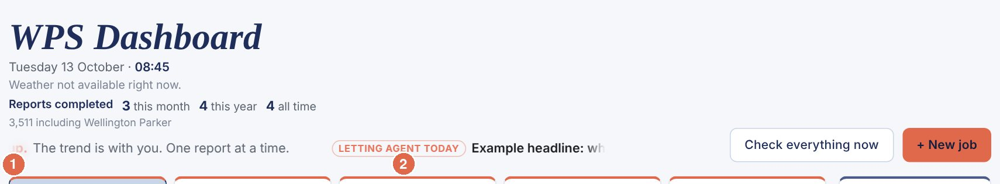
The moving line under the date takes turns: an encouraging message, then a headline from the inventory and lettings news (AIIC, Propertymark, Letting Agent Today, Landlord Today, Property118, Landlord Law Blog, The Negotiator). Click or tap a headline to read it in a new tab. Rest the mouse on the line to pause it. New headlines are fetched every hour. If a news site stops working for more than a day, a small line under it says which.
More: section 18.
Don't use Import backup unless Claude tells you to: it replaces the jobs on that device.
More: section 19.
Part 3. The full detail
The Dashboard is the first page you see. It fits on one screen of the PC.
| 1 | The news line. Takes turns: an encouraging message, then an industry headline. Click a headline to read it (4.14). |
| 2 | Check everything now. Saves and gets the latest from the Google Sheet, checks new bookings, picks up reports that emailed themselves and loads amendments, in one click. It says Checking… while it works. A small coral number shows how many cards are waiting to review. + New job next to it logs a job by hand (section 9). |
| 3 | Tiles, in four groups: To do now, Waiting on others, Money, Performance. Each shows its number beside its name. Click a tile to show its list in box 7. A tile with nothing in it is faded. |
| 4 | Do next. What to do now, most urgent first, one button each (below). |
| 5 | Today. Today's jobs in time order, with the tenant, phone and notes under each, the weather, Plan my day (section 17) and Today's route (Google Maps with today's jobs in time order). |
| 6 | Next 7 days or Map. The coming week, a day per column, with Route on each day that has jobs and + to add a job on that day. Days with nothing booked show "Free". Map shows the jobs as pins instead (section 17). "2 with no date" opens the jobs still waiting for a date. |
| 7 | The list panel. Shows the list for whichever tile is selected. It shows up to 7 lines, then Show all. When you open the Dashboard it picks the most urgent tile that has something in it. |
| 8 | Pages: Dashboard, Job Log, Photo Tool, Dictation. Under them, LINKS (section 19). |
| 9 | TOOLS: saving to Google, Theme, Help hints, Manual, and More ▸ for backups and the calendar (section 19). |
Do next puts everything that needs you in one list, in this order: tenant comments to review; reports overdue; a tenant has picked a mid-term time (Approve / Decline); visits passed but still at Booked (Mark visited / Rearrange); comment reminders due (Write email); bookings from Gmail to check (Open tray); reports due within a day; photos not done (Photo Tool); times or dates to agree (mid-terms get Send slot link); reports sent but not invoiced (See list); invoices awaiting payment (See who owes, red once the oldest is over 30 days). It shows 6 lines, then Show all.
Park takes a job off Do next until you un-park it. It still counts in the tiles and shows in every list. Parked jobs are listed at the bottom of Do next with an Un-park button each.
Everywhere on the Dashboard: click a job (the blue job number and address) to open it. Use a job's coloured stage box to change its stage (section 7). The page refreshes itself every 3 minutes, and when you come back to the tab, but never while a job form or Rearrange panel is open or you're typing.
Under the date, Reports completed counts your finished reports this month, this year and all time. An inventory and check-in counts once it's Signed, Deemed agreed or Archived; every other report counts once it's Sent (or later). It only counts jobs in the Job Log, so it's WPS work only.
Milestones. When the all-time count passes 50, 100, 250, 500, 1,000, 2,000 or 3,000, a card appears under the panel. Click Thanks to put it away. Each device shows each milestone once.
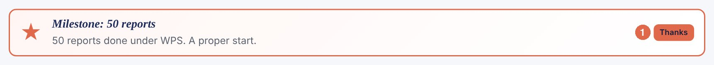
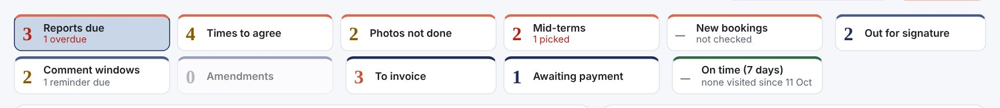
| Tile | What it counts | What to do |
|---|---|---|
| To do now | ||
| Reports due | Jobs you've visited whose report hasn't been sent, soonest first. The line underneath shows how many are overdue and how many are "to confirm" (still at Booked after the visit time). | Confirm visits or rearrange them (section 6); write the reports and move them on. |
| Times to agree | Booked jobs with no time set (today or later, or no date). Winkworth check-outs with a date are left out: they are done any time that day. Rearranged jobs waiting on a new date show a Rearranged tag. | Agree a time, open the job, add it. |
| Photos not done | Jobs visited in the last 30 days, report not sent, no photo link saved. | Run the Photo Tool for them, or paste a link into the job. |
| Mid-terms | Mid-terms at Booked with no date (or rearranged). The line underneath shows how many tenants have picked a time. | Send slot links; approve or decline picks (section 16). |
| New bookings | Cards from the inbox check you haven't dealt with (bookings and Tide invoices). Shows "–" with "not checked" until you click Check everything now. | Check everything now, then work through the tray (section 10). |
| Waiting on others | ||
| Out for signature | Inventory and check-in reports at Sent, waiting for signatures. | Set to Signed when the signed copy arrives. |
| Comment windows | The 7-day comment window on each sent check-in report. The line underneath shows reminders due. | Section 11. |
| Amendments | Jobs with tenant comments still open. Shows "–" with "click to load" until loaded. | Click the tile, then Load amendments (or use Check everything now). |
| Money | ||
| To invoice | Report sent (or signed, deemed agreed, archived), not invoiced yet. | Invoice in Tide with the WPS number in the message line. |
| Awaiting payment | Invoiced, not paid yet. Shows the invoice number and a Paid button. | Click Paid when the money arrives. |
| Performance | ||
| On time (7 days) | The share of reports sent within target over the last week, and the average hours from visit to sent. Targets: check-outs 48h, everything else 72h. Green 80% and over, amber 50–79%, red below. | Click for the Performance panel. |
Number colours: red = late or needs action now, amber = worth doing soon, coral = money to chase, navy = information, grey = nothing there.
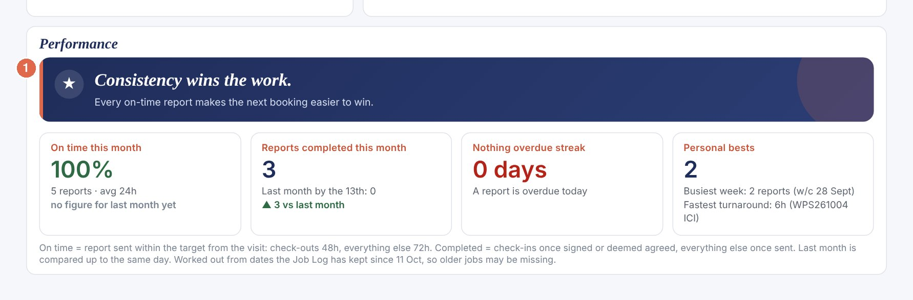
Click the On time tile. At the top, a message card: it picks its words from how the month is going (a personal best, up on last month, a quiet spell, or steady). Underneath, four cards:
The figures are worked out from the dates the Job Log has kept since 11 October, so older jobs may be missing from them.
The Theme box in the sidebar changes the colours on that device: Classic (the usual look), Light (white background) or Night (dark, easier on the eyes in the evening). It's one setting for every page: the Dashboard, Job Log, Photo Tool (Theme box at the bottom of its sidebar) and Dictation (Theme box in its Settings) all follow it, and you can change it from any of them. Each device remembers its own choice.
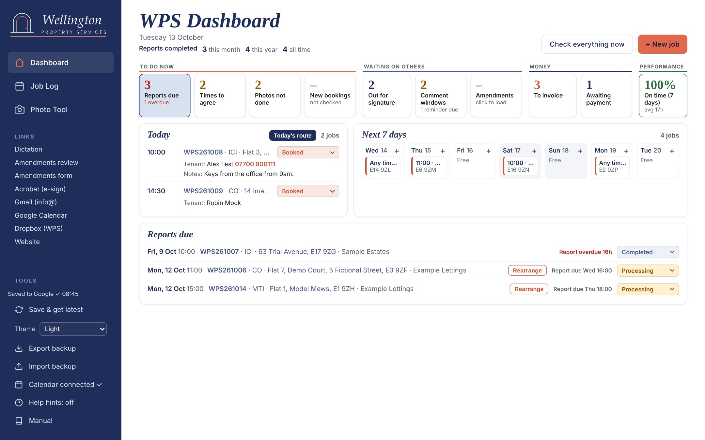
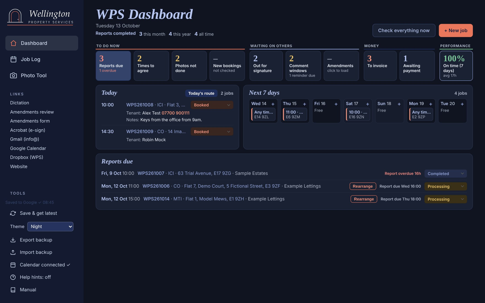
At the top, one line per client: how many invoices, the total (from the amount on the Tide card) and how long the oldest has been waiting; over 30 days shows red. The To invoice panel has the same summary for reports not yet invoiced.
Click Paid and the job is marked Paid with today's date. An Undo bar shows for 8 seconds in case you clicked the wrong one (section 7). Open in Job Log shows the same jobs in the full list.
Click the Reports due tile. The list has two parts:
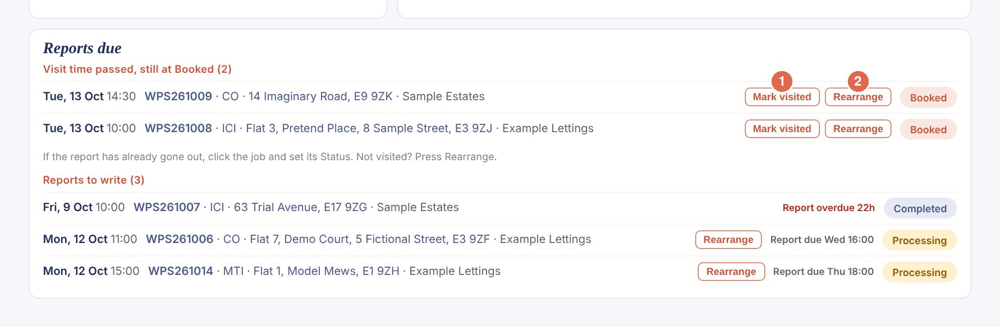
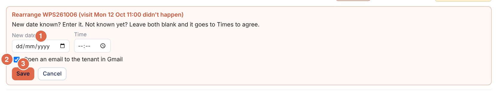
1 New date known? Enter the date and time. Not known yet? Leave both blank.
2 Open an email to the tenant in Gmail is ticked by default. For a mid-term it also says the email will CC bowpropman@winkworth.co.uk. If the job has no tenant email, a warning says the email will open with To blank.
3 Save. What happens:
| New date entered | Left blank | |
|---|---|---|
| The job | Back to Booked on the new date and time. | Back to Booked with no date or time, so it shows in Times to agree with a Rearranged tag. |
| Calendar | The event moves to the new date. | The event is removed. |
| Email (if ticked) | Gmail opens a confirmation of the new appointment. | Gmail opens an email asking the tenant for days and times over the next two weeks. |
| Notes | A line goes at the top of the job's notes, e.g. "Rearranged 13 Oct: visit Mon 12 Oct 11:00 didn't happen. New date Fri 16 Oct 11:30." | |
Every job has a stage, shown as a coloured box (on the Dashboard, in the Job Log and in the job form). Click the box and pick the stage you want. You can go forwards or backwards in one go. In the Job Log's Board view you can also drag a job's card to another column (section 8).
| Stage | Means | Move it here when… |
|---|---|---|
| Booked | In the diary, not visited yet. | Automatic for new jobs. |
| Processing | Visited, report being written. | You've done the visit (stage box or Mark visited). |
| Completed | Report written, not sent yet. | The report is finished. |
| Sent | Report has gone out. The sent date is recorded. For check-ins, the 7-day comment window starts. The job also joins "To invoice". | Set by itself when the auto-send emails it (section 11). Otherwise, the day you send it (or send it for signature). |
| Signed | Check-in report signed. | The signed copy comes back, from Acrobat or the WPS signing page. The Dashboard can't see either yet, so this is always your choice in the box. |
| Deemed agreed | Check-in window closed with no signature and no open comments. | You don't: it's set by itself (section 13). |
| Archived | Finished and filed. Drops off the Dashboard lists. | The job is fully done. |
Every stage or invoice change from a box, Mark visited and Paid shows a bar at the bottom of the screen for 8 seconds, e.g. "WPS261002 marked Paid". Click Undo to put the job back exactly as it was. Missed it? Pick the old stage (or invoice state) in the box again. Moving a job back before Sent clears its sent date.
Once a job is visited (Processing, or Booked with the visit time passed), it gets a due time: 48 hours for check-outs, 72 hours for everything else, counted from the visit. You'll see "Report due Wed 16:00" under the stage box, amber when it's within 6 hours, and red "Report overdue 16h" when late. Overdue rows in the Job Log are shaded red.
If lots of jobs show as overdue, it's usually because reports were sent but their stage wasn't changed. Set each one to Sent (or further) and the count drops. Reports emailed by the auto-send are set to Sent for you.
Click Job Log in the sidebar. It shows every job, with the ones needing a report first, then the newest.
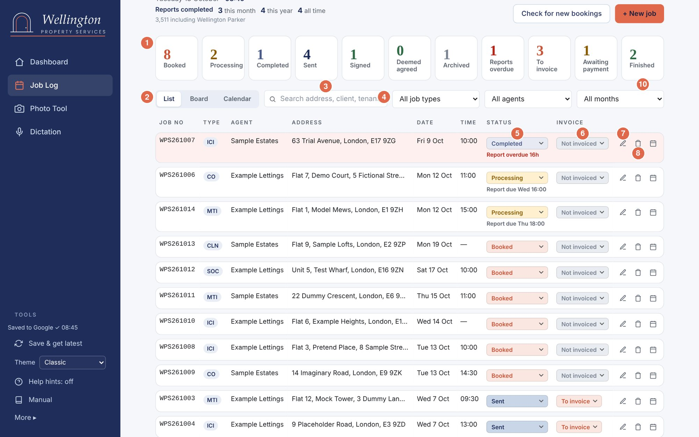
| 1 | Count cards. How many jobs at each stage, plus Reports overdue, To invoice and Awaiting payment. Click a card to show only those jobs. Click it again to show all. |
| 2 | List / Board / Calendar. Three ways to see the same jobs: a list, a board with a column per stage, or a month calendar. |
| 3 | Search. Type part of an address, postcode, agent, tenant name or email, job number or invoice number. |
| 4 | Filters. Show one job type, one agent or one month. |
| 5 | Stage box. Pick the stage. The line underneath says when the report is due, or "Visit done? Move to Processing" once the visit time has passed. |
| 6 | Invoice box. Pick Not invoiced, Invoiced or Paid. It shows "To invoice" in coral once the report is sent. Undo shows for 8 seconds. |
| 7 | Pencil. Open and edit the job. |
| 8 | Bin. Delete the job. It asks first. There's no undo, and it also removes the calendar entry. |
| Calendar icon (last on each row) (only when the calendar is connected). Puts the job on the info@ calendar, or updates it. Blue = already on the calendar. | |
| 10 | Finished. Jobs that are paid and whose report is done (check-ins at Signed, Deemed agreed or Archived; other jobs at Sent or later). They're hidden from the main list so it stays short. Click the card to see them. Search still finds them. |
The Job Log keeps your place: open a job, close it, and the list is where you left it. Check for new bookings (top right) does the bookings part of Check everything now.
"Finished" is not the same as the "Completed" stage: Completed means the report is written but not sent.
Click Board. Each column is a stage: Booked, Processing, Completed, Sent, Signed, Deemed agreed (Archived only when you've clicked the Archived card). Cards are in the same order as the list, report due first. Each card shows the job number, type, address, date, time, agent, when the report is due, and whether it's to invoice. Overdue cards are red.
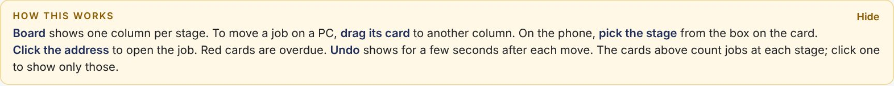
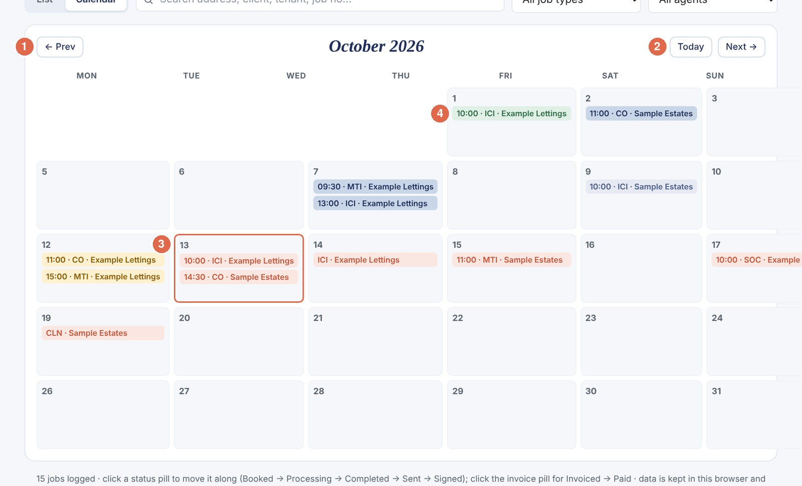
1 Prev / Next change month. 2 Today jumps back to this month. 3 Today has a coral border. Click an empty part of any day to add a job on that date. 4 Click a job to open it. Hover over it on the PC to see the full address.
Click + New job (top right of the Dashboard or Job Log), the + on a day, or an empty calendar day. To change a job, click its address or the pencil. The same form opens either way.
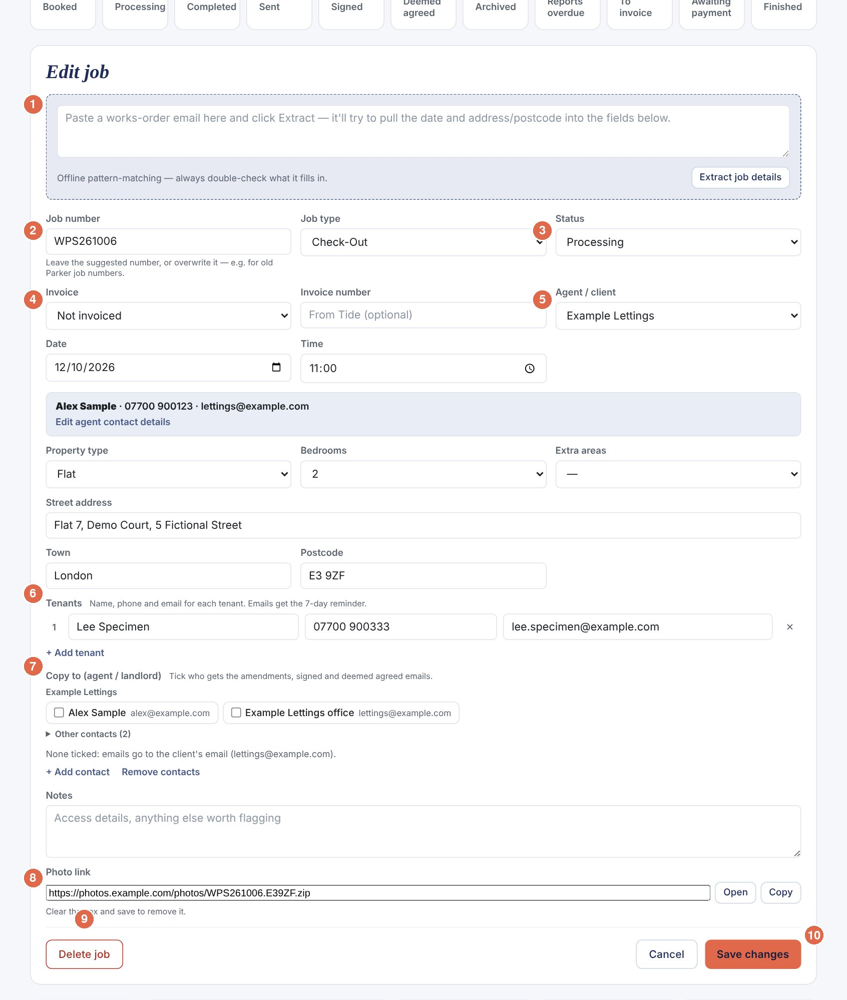
| 1 | Paste box. Paste the agent's booking email and click Extract job details. It fills in the date, address, postcode and job type it can find. It works best when the address and postcode sit on their own line. Always check what it fills in. |
| 2 | Job number. Fills itself: WPS + year + month + number, e.g. WPS261015. Numbers are never reused, even after a delete. You can type over it (e.g. for an old Parker number). |
| 3 | Status. The stage, the same as the stage box in the lists. |
| 4 | Invoice and Invoice number (from Tide). Usually filled by Mark invoiced (section 10). |
| 5 | Agent / client. Pick from the list. Choose + Add new agent… at the bottom to add one. The box underneath shows that agent's saved contact; Edit agent contact details changes it for every job with that agent. |
| 6 | Tenants. One row per tenant: name, phone, email. + Add tenant adds a row (up to 6); ✕ removes one. The emails get the signing links on check-ins (section 12), the 7-day reminder and the Rearrange emails. A tenant email that doesn't look right stops the save until it's fixed. Older jobs that had tenants typed as one line are split into rows for you, with a pink "Split from the old text" line: check the rows, then save. |
| 7 | Copy to (agent / landlord). Tick who gets the reports the auto-send emails (unless a client rule says otherwise, section 11) and the "amendments in progress", "signed" and "deemed agreed" emails. The job's agent's contacts are listed first; Other contacts folds the rest away. + Add contact saves a new name and email and ticks it. Remove contacts lets you delete saved contacts (jobs that already copy to them keep the address). The line underneath says who will get the emails; with nothing ticked they go to the agent's saved email. |
| 8 | Photo link. Saved by the Photo Tool, or paste a link (e.g. Dropbox) by hand. The auto-send puts it in the report email. Open opens it, Copy copies it for the report email. It must start with http:// or https://. Clear the box and save to remove it. A link the Photo Tool saves while the form is open is kept, unless you changed the box. |
| 9 | Delete job (existing jobs only). Asks first, removes the calendar event too, can't be undone. To keep a record, set Status to Archived instead. |
| 10 | Save job (or Save changes). If the calendar is connected, the job goes on the info@ calendar too. Cancel, the browser's Back button or the Esc key close it without saving. If you've changed anything, it asks first: OK throws the changes away, Cancel keeps you editing. Leaving for another page or closing the tab with unsaved changes also asks first. |
The other boxes: job type, date and time of the visit, property type, bedrooms, extra areas, street address, town, postcode, and notes (access details, key collection and so on).
When you've corrected a check-in report after tenant comments and sent it again, open the job. Under Status you'll see when its window closes and a button:
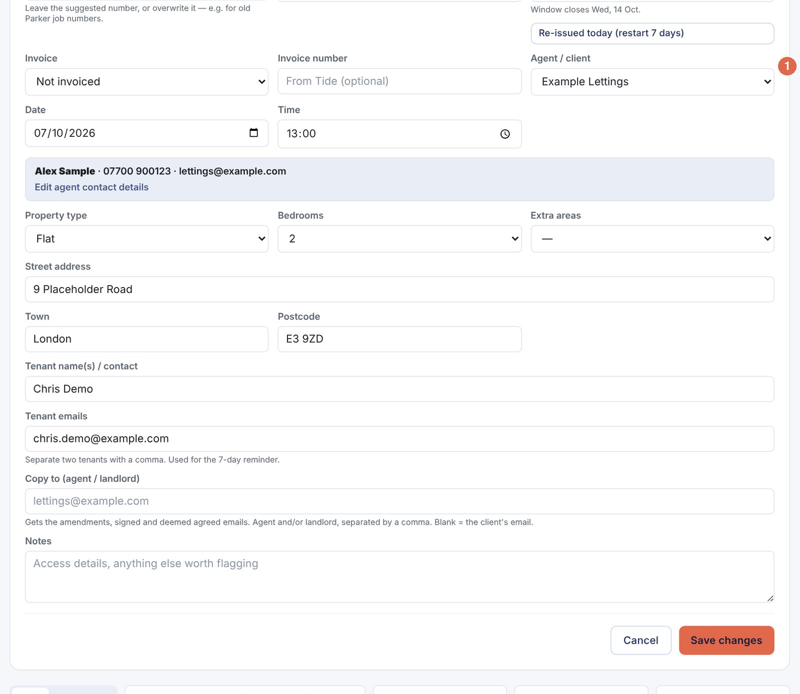
Click it the day you re-send. The job goes back to Sent and a new 7-day window starts, covering the changed items only. The original sent date is kept, so turnaround figures aren't affected.
Three times a day (7:51, 12:51 and 15:51, Monday to Saturday) Claude reads the info@ inbox (mail to every WPS and old Wellington Parker address lands there) and lines up:
It also picks up the tenants' names, phones and emails, and takes the person who sent the instruction as the Copy to. If a works order looks copied from an old one (old tenant details), it leaves the tenants out and says so on the card. WhatsApp bookings can't be seen: add those by hand.
Click Check everything now on the Dashboard (or Check for new bookings on the Job Log page). The first time each session Google may ask you to sign in (choose info@). The cards appear in a To review tray:
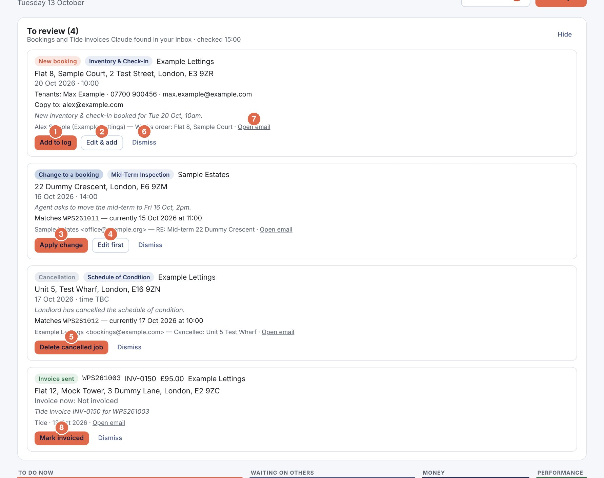
| Card | Buttons |
|---|---|
| New booking (coral label) | 1 Add to log adds it straight away with the next job number, tenant rows and Copy to filled in. The sender is added to your saved contacts. 2 Edit & add opens it in the job form first, so you can check or add details, then Save job. If it says "Possible duplicate of WPS…", it looks like a job you already have. Check before adding. |
| Change to a booking (blue label) | It shows which job it matches and the current date and time. A change that only brings tenant details says "Date unchanged". 3 Apply change updates the date and time on that job and adds a note. Tenant details are added only if the job has none; tenants already on a job are never overwritten (different details go into the notes). 4 Edit first opens the job with the change filled in, for you to check and save. |
| Cancellation (grey label) | 5 Delete cancelled job removes the matching job and its calendar entry. It asks first. No undo. |
| Invoice sent (green label) | Shows the job number, invoice number, amount and client, and the job's invoice state now. 8 Mark invoiced sets the job to Invoiced with that invoice number and the email's date. If the job is already Paid the button says Save invoice no. and it stays Paid. If the job already has a different invoice number it asks before replacing it. "Already recorded ✓": nothing to do, click Clear. No WPS number in the email, number not found, or the number on two jobs: a warning shows and only Dismiss is offered. Set the invoice on the right job by hand. |
| Report sent (blue label) | Only shows when the auto-send emailed a report but the job couldn't be set to Sent, with the reason (for example the job number isn't in the log, or the type doesn't match). Set the stage by hand if the report did go out, then Dismiss. When all is well there's no card: the job is set to Sent and a line at the top says "Reports emailed automatically: WPS… marked Sent". |
| Every card | 6 Dismiss ignores it. Nothing in the log changes. 7 Open email opens the original email in Gmail. Use it to double-check. |
Hide (top right of the tray) folds it away. Anything you haven't handled shows again next time. Cards you've dealt with are remembered in the Google Sheet, so the phone won't offer them again. Cards older than 14 days are hidden.
Check-outs, mid-terms and schedules of condition are emailed for you. Inventories and check-ins go out through the signing page (section 12). You only save the finished PDF into one folder.
If anything is missing or doesn't match, nothing is sent. The PDF moves to WPS Ready to send › Held and info@ gets an email "Report held, not sent - WPS…" saying why. Fix the problem, then move the PDF from Held back into WPS Ready to send. It's picked up within 15 minutes. The script never guesses a recipient or a link.
| The held email says | Fix |
|---|---|
| No WPS job number in the file name / more than one job number | Rename the file with the one right job number. |
| Not a PDF / PDF is over 24 MB | Save as PDF. For a big one, compress it or send it by hand. |
| WPS… is not in the Job Log / is on 2 rows | Add the job, or sort out the duplicate. |
| File name says MTI but the Job Log says CO | Correct whichever is wrong. |
| … reports are not sent automatically yet | Only check-outs, mid-terms, schedules and check-ins are sent. Send other types by hand. |
| Already sent by this script / Job Log has it at Sent already | To send again on purpose, put RESEND in the file name, e.g. WPS000000.E39ZZ.12.10.26.MTI RESEND.pdf. |
| Job Log row has no address / postcode | Fill it in on the job. |
| No recipient | Tick a Copy to on the job, or add the client's email on the Clients tab. |
| No photo link | Put the photo link on the job (Photo Tool or paste it), or make sure page 1 of the report links to it. |
| No check-in photo link found (check-outs) | Make the check-in reference on page 1 a link, or add a line Check-in photos: <link> to the job's notes. Without either, it looks for the latest check-in in the Job Log at the same postcode and door number with a photo link. |
| Gmail would not send from reports@ | Tell Claude. It never falls back to another address. |
Inventory and check-in reports are signed on WPS's own signing page instead of Acrobat. It went live on 18 October 2026, 01:38. You send a check-in the same way as any other report: save the PDF into WPS Ready to send (section 11).
If any of these isn't right, the PDF is held and info@ is told why, as in section 11.
The Signings tab in the WPS Amendments Sheet has one row per signer: when the link was sent, first opened, signed, and how (typed or drawn).
Acrobat stays available (sidebar link) for anything the signing page can't take, for example more than 6 tenants.
This only applies to inventory and check-in reports. Tenants have 7 days from when the report is sent to send comments through the comments form. If they don't comment or sign, the report is deemed agreed.
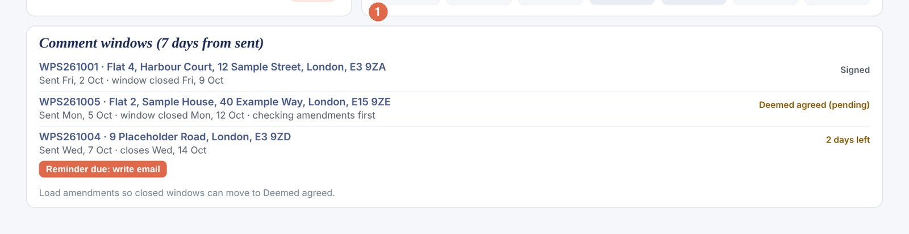
Each line shows when the report was sent and when the window closes. Amber means 2 days or less left.
The 7-day reminder. At 9am each day the reminder email to tenants goes out by itself from reports@ for any check-in with 2 days or less left, as long as the job has tenant emails. Check-ins sent through the signing page get the signing page's own reminder instead (section 12). The line then says "Reminder sent automatically" and you don't need to do anything.
If it hasn't gone (for example no tenant emails were on the job), 1 a coral Reminder due: write email button appears. It opens a ready-written reminder in Gmail, addressed to the tenant emails on the job. Pick reports@ as the From address, check it and send. The line then says "Reminder sent" with an undo link if you clicked by mistake.
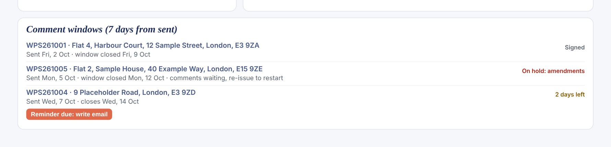
The automatic emails to the agent or landlord (the job's Copy to) are covered in section 20.
Click the tile, then Load amendments (Check everything now does this too). Google may ask you to sign in. It reads the WPS Amendments Sheet and lists every job with tenant comments still open:
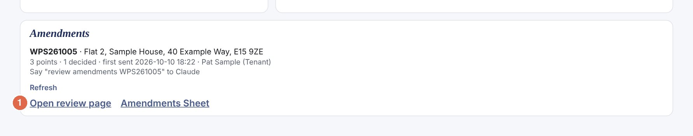
Tenants send comments through the comments form (the link in the report email and on the signing page; Amendments form in the sidebar). The form only accepts a real WPS job number with the property's matching postcode. Photos must be JPEG. The receipt goes only to emails already on the job.
To work through them, say "review amendments WPS261005" (with the job number) to Claude in the WPS project chat on the PC. Claude fills in the review page.
1 Open review page is where you decide each point: Make the change, Add to Notes or No change. Amendments Sheet opens the raw list. Refresh reads it again.
Use it on the PC, after a day of visits. It does four things for each job: splits the day's photos into jobs, names them by room, adds the watermark, and makes one zip per job. Everything happens on the PC. Your original photos are never changed.
Your work is kept. You can go to the Dashboard or another page and come back, or close and reopen the tab: the photos, sets and rooms you've marked are kept on that device until you click Start again. The page shows Kept on this device ✓ — safe to switch pages.
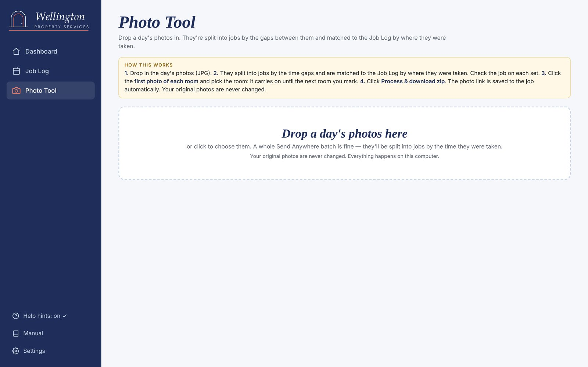
Drag the whole day's photos onto the dashed box, or click it and choose them. A whole Send Anywhere batch is fine.
The photos are split into sets wherever there's a gap of 30 minutes or more between shots. Each set is matched to a job by where the photos were taken, or by booking time if the photos have no location.
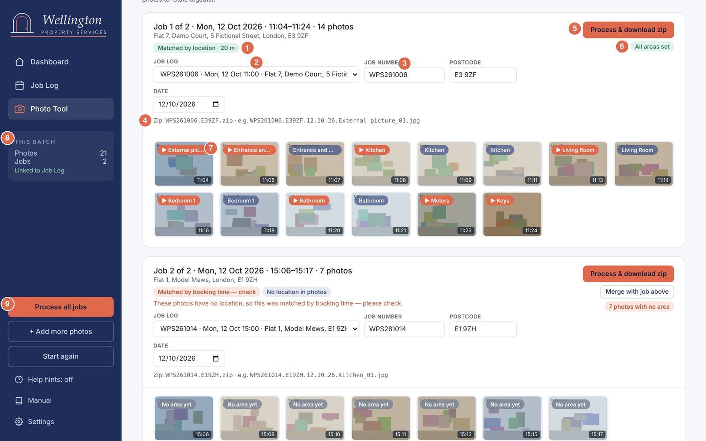
| 1 | How it matched. Green "Matched by location" is reliable. Amber "Matched by booking time — check" or "Location match — check" means look at it. "Not matched — pick the job" means choose one. |
| 2 | Job Log. The job this set belongs to. Jobs near where the photos were taken are listed first, with the distance. Pick a different one if it's wrong. The list only offers jobs dated from 21 days before to 2 days after the photos. |
| 3 | Job number and postcode. Fill in from the job. You can type them by hand. The zip button stays grey until both are there. |
| 4 | Names preview. What the zip and photos will be called, e.g. WPS261006.E39ZF.zip and WPS261006.E39ZF.12.10.26.Kitchen_01.jpg. |
| 5 | Process & download zip for this job (step 4). |
| 6 | Areas check. "All areas set" in green, or how many photos still have no room. |
| 7 | Photos. ▶ in coral marks the first photo of a room. The grey label on the following photos shows they belong to that room. |
| 8 | This batch. How many photos and jobs, and that it can see the Job Log. |
| 9 | Process all jobs makes every zip in one go. Below it, + Add more photos (anything you missed) and Start again (clears the tool, originals untouched). |
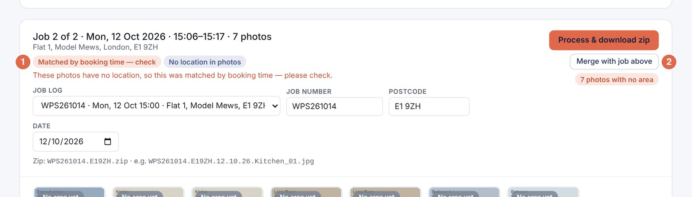
Click the first photo of each room. A panel opens at the bottom:
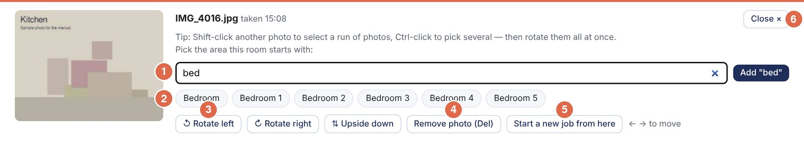
| 1 | Find an area. Start typing (e.g. "bed") and the room buttons narrow down to the ones that match. A name that isn't in the list (e.g. "Bedroom 1 (1st LHS)") gets an Add button: click it or press Enter and it's added to the list for next time. |
| 2 | Room buttons, in walk-round order. Click the room. Every photo after it belongs to that room until the next one you mark. The panel then moves to the next photo, so you can carry on. Remove room start undoes a room you marked by mistake. |
| 3 | Rotate left, right or upside down. |
| 4 | Remove photo leaves it out of the zip. It isn't deleted from your PC. Click again to put it back. |
| 5 | Start a new job from here splits the set at this photo. |
| 6 | Close (or Esc). |
Keyboard shortcuts in the panel: ← → previous/next photo, R rotate, Del remove, Esc close. To rotate several at once, click one photo, then Shift-click another to select the run between them (or Ctrl-click to pick photos one by one), and use the buttons in the panel.
The External picture room is special: as well as going in the zip, a clean copy (no watermark, larger) is saved separately as the report cover photo, e.g. WPS261006.E39ZF.cover.jpg.
Click Process & download zip on the set (or Process all jobs). A progress bar shows each photo. When it's done:
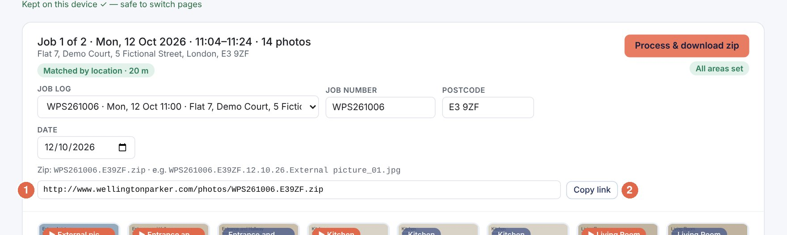
Inside each photo: the date and time it was taken are kept, the location is removed, and a small navy Wellington Property Services tag with the date and time sits in the corner.
Click Settings at the bottom of the sidebar. Settings are saved on that PC.
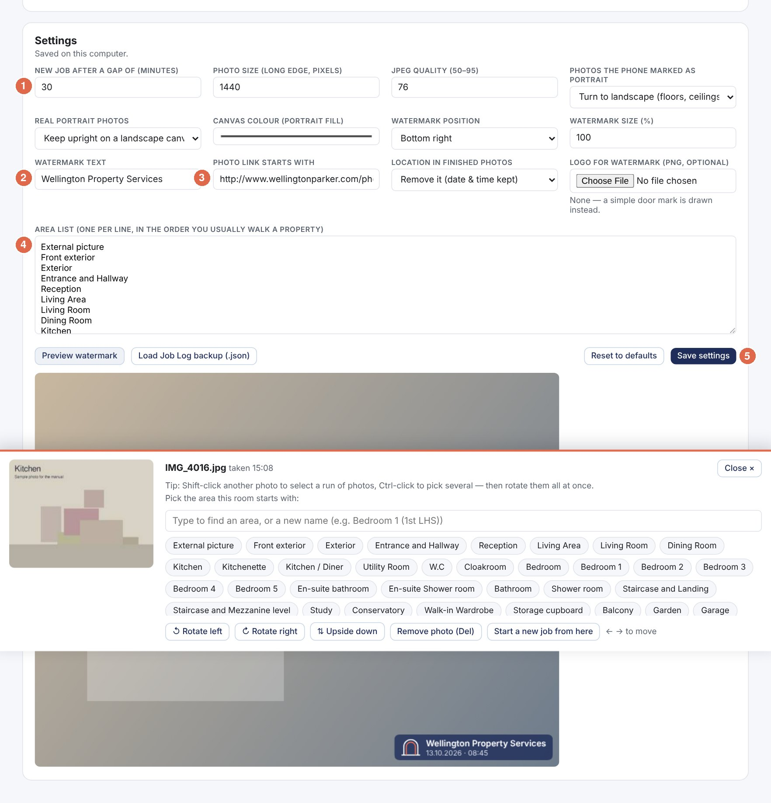
Use it on the phone during a visit. Open it from Dictation in the sidebar (on the phone, in the bar along the top). Add it to the home screen so it opens like an app. The notes are kept on that phone only, until you copy them out.
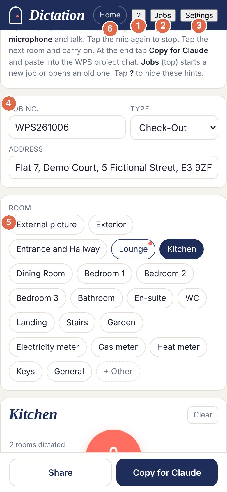
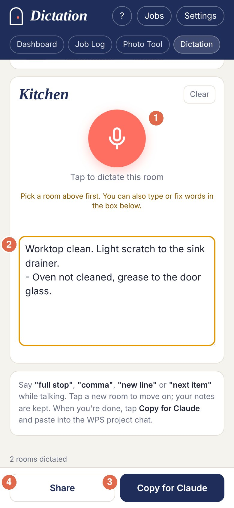
Top bar:
Steps:
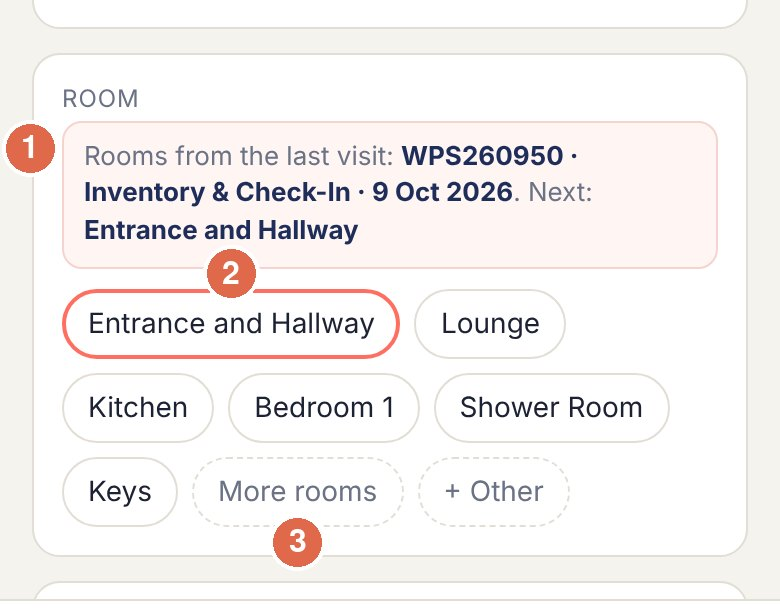
When the address (with its flat or house number and postcode) matches a property you've dictated before on that phone, the room buttons are filled in from that visit, in the same order, and a line says which visit it was. A check-out uses the check-in's rooms; a mid-term or schedule of condition uses the latest visit. A new property shows the full room list. More rooms adds the full list after them; + Other adds a room. The rooms only change before you start dictating, so nothing you've said is lost.
While talking you can say "full stop", "comma", "question mark", "new line", "new paragraph" or "next item" (starts a new bullet). Clear (next to the room name) empties that room's text.
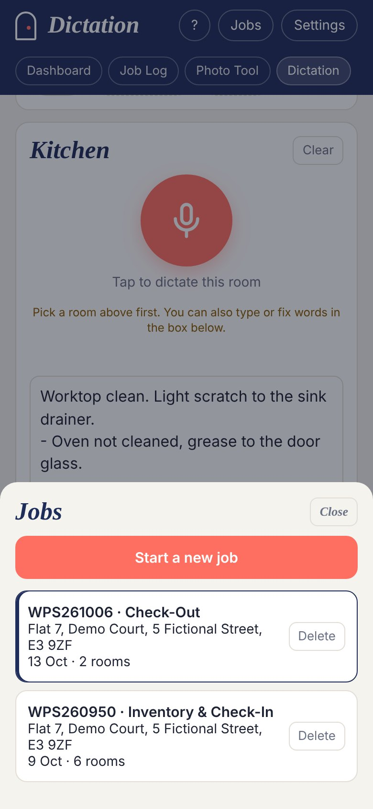
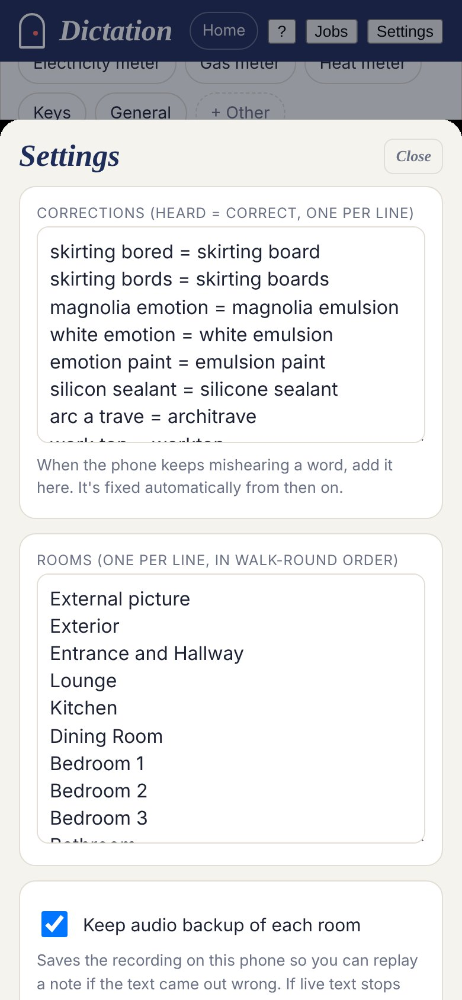
Instead of phoning or emailing back and forth to agree a mid-term time, you send the tenant a link. They see only the times you're free and pick one. You approve it. Nothing is booked without your click.
The Mid-terms tile on the Dashboard opens the Mid-terms to book panel: every mid-term at Booked with no date, or rearranged, or with a link out. Picks waiting for you come first ("Tenant picked a time, approve or decline"), then "Need a date". Picks also show in Do next. The panel needs Google sign-in: if it says so, click Save & get latest in the sidebar.
| Row says | Buttons |
|---|---|
| No link sent | Send slot link: makes the tenant's own link and opens the email in Gmail, to the tenant emails on the job, CC bowpropman@winkworth.co.uk. Check and send it in Gmail. No tenant email on the job? It asks first, and the email opens with To blank. |
| Link sent (date), no pick yet | Send again: the same email and link again, as a chaser. Copy link: copies the link, e.g. for WhatsApp. |
| Picked (day, time) · will be there / use keys | Approve or Decline. Rest the mouse on the line to see the tenant's name, phone and note. |
| Declined, waiting for a new pick | Send again / Copy link, as above. |
A WPS page with the property address and the free 30-minute times. A time is free when it's inside your days and hours, not a bank holiday, not clashing with anything in the info@ calendar, and leaves time to drive from and to your other visits (Google's road time between postcodes, or the travel buffer when a calendar entry has no postcode). A time another tenant has picked but you haven't approved is held. They choose a time and say I will be there, Please use the keys or Someone else will let you in, with a name, phone and note if they like. You get a short email at info@ when they pick.
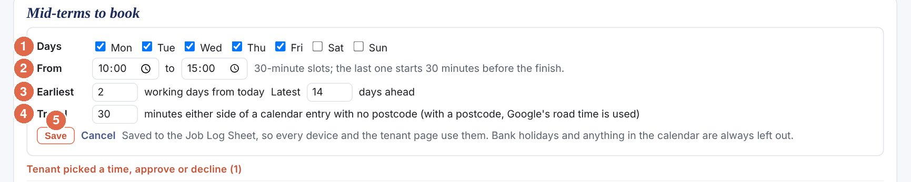
Click Change on the "Tenants can pick" line. Set the days, the hours (30-minute slots; the last one starts 30 minutes before the finish), the earliest (working days from today) and latest (days ahead), and the travel buffer. Click Save. The settings are saved to the Job Log Sheet, so every device and the tenant page use the same ones. Starting settings: Monday to Friday, 10:00 to 15:00, from 2 working days to 14 days ahead, 30 minutes buffer.
Click Plan my day in the Today box, or Route on a day in Next 7 days. A card opens under the week.
In the Next 7 days box, click Map. Upcoming jobs show as pins coloured by type (ICI blue, CO red, MTI amber, SOC purple, CLN green). Pick Next 7 days, Next 30 days or Times to agree from the box. Click a pin to see the job and open it. Use it to offer a tenant a day when you're already nearby. Days goes back to the list.
The map comes from OpenStreetMap and the postcode positions from postcodes.io. Only postcodes are sent, never names. It needs the internet; if the map can't load, the list still works.
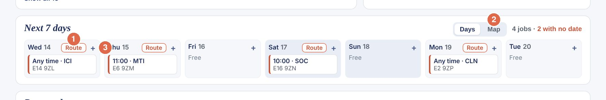
The Dashboard and Job Log work on the phone and tablet. The sidebar folds into a bar at the top with the four pages, the tiles sit in one row you swipe sideways, each job in the Job Log shows as a card, and a round coral + in the corner adds a job. Rearrange, Paid, Mark visited and the job form (tenant rows, Copy to, photo link, Delete job) all work on the phone.
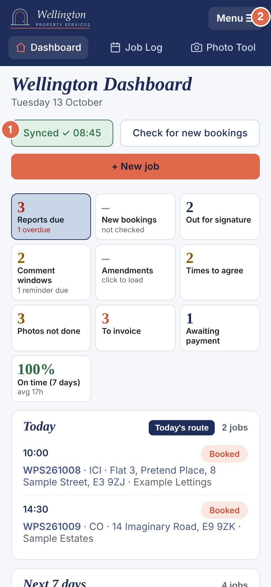
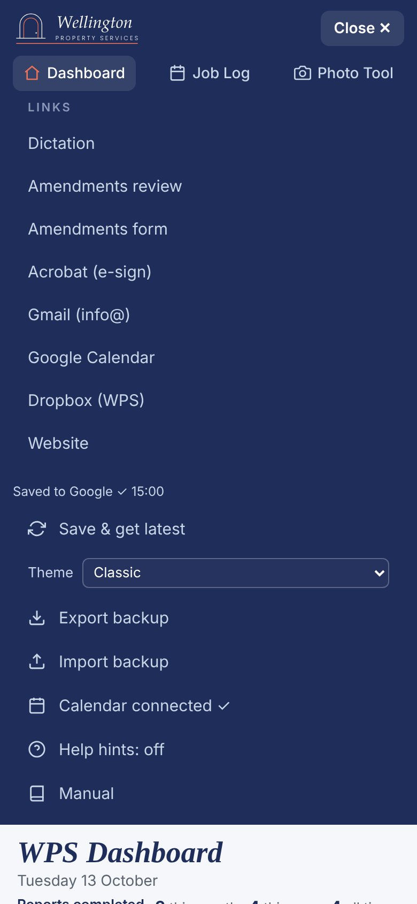
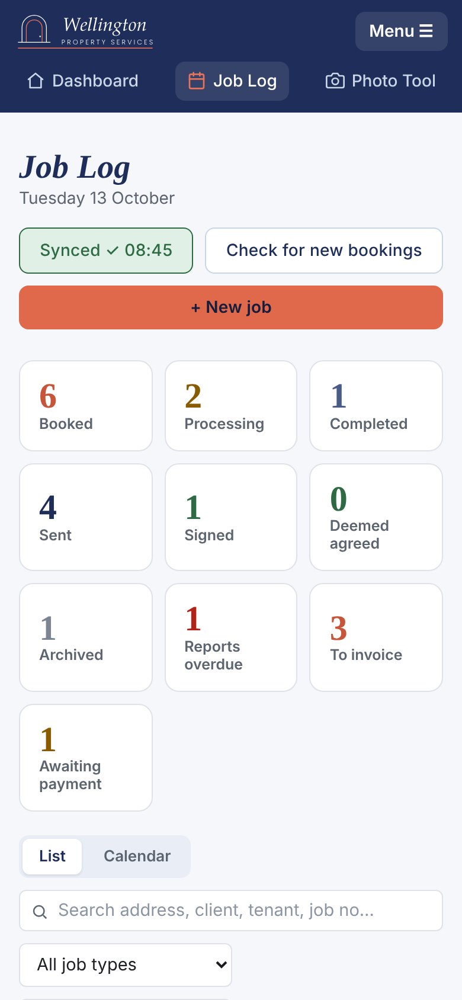
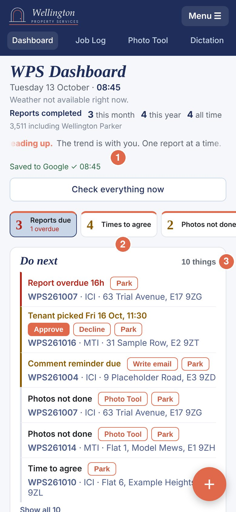
The Photo Tool is meant for the PC (big batches of photos and downloads). Dictation is meant for the phone.
| What you see | What to do |
|---|---|
| A change Claude made isn't showing on the PC. | Press Ctrl+Shift+R. If it's still the old version, wait up to 10 minutes and try again. |
| The phone or tablet shows no jobs. | Tap Load my jobs from Google and sign in as info@. |
| Phone doesn't show what you did on the PC. | Tap Save & get latest. |
| Sidebar says "Google copy: click Save & get latest". | This tab isn't signed in to Google yet, so changes are only in this browser. Click Save & get latest. The calendar catches up on the next save after that. |
| "The Job Log was changed both here and on another device since the last sync." | OK loads the Google copy (this browser's unsynced changes are lost). Cancel keeps this browser's copy. If unsure, choose OK and redo your last change. |
| "Google sign-in pop-up was blocked" | Allow pop-ups for the site (icon at the right of Chrome's address bar), then try again. |
| "Not saved to Google — will retry on next change" | Usually the internet dropped. Click Save & get latest when you're back online. |
| "Couldn't update the calendar for …" (with Google's reason) | The job saved, the calendar didn't. Check the event in Google Calendar, then save the job again. |
| "Couldn't remove the calendar event for …" | Delete that event in Google Calendar by hand. |
| Amendments or New bookings tile shows "–". | Normal until you load them. Click Check everything now. |
| "Deemed agreed (pending)" stays on a check-in. | The amendments haven't been loaded in the last 30 minutes. Click Check everything now. |
| Invoice sent card: "No WPS job number in the email" / "Couldn't find …" / "is on 2 jobs" | Dismiss it and set the invoice on the right job by hand (Invoice and Invoice number boxes). Next time, put the WPS number in the Tide message line. |
| "Google refused Gmail access (403)" | Tell Claude. It's a Google set-up issue, not your data. |
| Lots of reports overdue. | Set sent reports to Sent or beyond. Use Mark visited for visits still at Booked. |
| Picked the wrong stage or clicked Paid by mistake. | Click Undo on the bar (8 seconds). Too late? Pick the old stage in the box. |
| "Report held, not sent" email. | Read the reason, fix it, move the PDF from Held back into WPS Ready to send (section 11). |
| A report was emailed but the job isn't at Sent. | Click Check everything now. If a Report sent card shows a reason, set the stage by hand and Dismiss the card. |
| A tenant says their signing link doesn't work. | The link stops once they've signed, or when a RESEND starts a new round. Check the Signings tab and send the newest email again if needed. |
| Closing a job asks "You've changed … but not saved it". | OK throws the changes away. Cancel keeps you in the form so you can Save. |
| Claude can't click or read the Dashboard in Chrome ("Cannot access a chrome-extension:// URL…"). | The LastPass extension blocks Claude. Switch LastPass off at chrome://extensions while Claude works, then back on. |
| Photo Tool: "Can't see your Job Log jobs" | Open it from the sidebar in the same Chrome as the Job Log. You can still type job numbers by hand, then paste the link into the job form. |
| Photo Tool split a visit wrongly. | Merge with job above / Start a new job from here (section 14), or change the gap in Settings. |
| Photo Tool zip downloaded with a random name. | Fixed 18 Oct (pull request #29). Press Ctrl+Shift+R to load the fixed page. Rename any older zip by hand to its WPS name. |
| Photos had "no date taken inside". | They're HEIC or edited copies. Check the split. Set the iPhone to Most Compatible. |
| Dictation microphone does nothing. | Allow the microphone when asked. Check signal. Try switching off audio backup in Settings. |
| Deleted a job by mistake. | Press Undo on the bar that shows straight after (a few seconds). Missed it? Re-add it, or ask Claude to help restore it from a backup. |
| Mid-terms panel: "Click Save & get latest in the sidebar to see slot links and tenants' picks." | Click Save & get latest (it signs you in to Google), then the Mid-terms tile again. |
| "Couldn't make the link" / "Couldn't approve" / "Couldn't decline" | Nothing on the job changed. Click Save & get latest and try again. If it keeps happening, tell Claude. |
| A tenant picked a time you can't do. | Click Decline. They get the email to pick again from the same link. |
| Plan my day says "about" or "Estimates only". | You're not signed in to Google. Click Save & get latest; the road times fill in by themselves. |
| "Couldn't get Google road times …" in Plan my day | The estimates still show. Try again later. If it keeps happening, tell Claude. |
| "The map couldn't load." | No internet, or the map site is down. The list still works. |
| A job is missing from Do next. | It may be parked: look at the Parked line at the bottom of Do next and click Un-park. |
| "News: … not loading since …" under the news line. | Nothing to do. The script keeps trying the backup address. If it stays for days, tell Claude. |
| The news line shows only messages. | No new headlines yet, or the news couldn't be fetched. It tries again every 30 minutes. |
Things that aren't finished or haven't been tried in real use yet, as of 20 October 2026:
| What | Where | How it works |
|---|---|---|
| Tile lists | Dashboard tiles | Clicking a tile now opens its list straight under the tiles (it used to be at the bottom of the page). Click the same tile again, or Close, to shut it. Price list and System health open in the same place. |
| Winkworth check-outs | Times to agree | A Winkworth check-out with a date no longer needs a time agreed. It shows on its day as Any time. With no date it still shows as No date yet. |
| Keys | Job form, Today, Plan my day, calendar | Set Keys from and Keys back to with a short note (e.g. Winkworth, 429 Roman Road). Today, Plan my day and the calendar event show "collect from ... back to ...". After the visit, keys not marked back show in Do next: press Keys returned. |
| Day-before reminder | Script, job form | About 17:00 the script emails the tenants of tomorrow's booked jobs that have a time, from hello@. Mid-terms copy Riley. Logged in the Visit reminders tab. Tick No day-before reminder on a job to skip it. |
| Price list | Sidebar > Price list | Fees per agent, job type and bedrooms, plus each extra area, with separate Flats and Houses tabs (a house uses the house price when the job's Property type is House; a blank house box falls back to the flat price). The job form shows the expected fee. To invoice and Awaiting payment add up using the price list where Tide gave no amount. A Tide invoice that doesn't match shows in Do next. |
| Money by month | Performance tile | Invoiced and paid for the last 6 months. |
| Report ageing | Reports due | Lines add "visited N days ago" once a visit is 2 or more days old. |
| This property before | Job form | Every other job at the same property, with Open and Photos. |
| Next mid-term due | Mid-terms tile | Properties whose last check-in or mid-term was about 6 months ago. New MTI starts a job with the address, agent, tenants and keys filled in. Check against Riley's list first. |
| Business mileage | Performance tile | Plan my day's Google road miles for days you've worked are kept. Shows this month and the tax year from 6 April. Copy mileage list gives a list to paste for the accountant. |
| Search | Job Log | Now also searches notes, keys notes and copy-to emails. |
| Export spreadsheet | Sidebar > More | Every job as a CSV file for Excel or Google Sheets. |
| Undo delete | After Delete job | An Undo bar shows for a few seconds. The job comes back with a new calendar event. |
| Change history | Job form | A dated line for each change to a job (last 40), for the record if a report is disputed. |